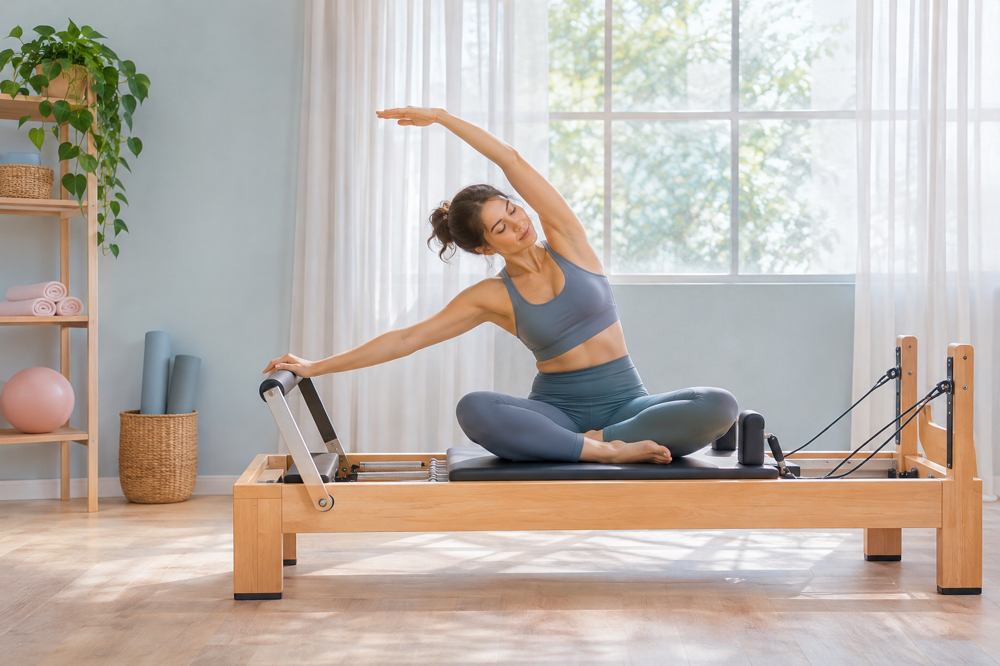

Força que acompanha.
Trabalhe a musculatura e a estabilidade para os movimentos da sua rotina.
FORTALECIMENTOPILATES & CUIDADO EM ITABORAÍ
Um tempo para você. Um novo olhar para o seu movimento. Descubra o bem-estar de cuidar de si.
Quero conhecer o studio
NOSSA ESSÊNCIA
Na Bem Estar, acreditamos no cuidado que começa pela escuta. O Pilates é um caminho para conhecer o próprio corpo, cultivar presença e construir uma rotina com mais movimento.
Com Débora dos Santos, fisioterapeuta e proprietária do studio, cada objetivo encontra espaço para ser ouvido. Porque se sentir bem também passa por se sentir acolhido.
O PILATES NA BEM ESTAR
Alongar, fortalecer e respirar com intenção. O Pilates combina controle e consciência corporal em movimentos que podem ser adaptados a diferentes objetivos.
No studio, o trabalho considera o que você busca: melhorar o condicionamento, desenvolver mobilidade ou incluir o movimento no dia a dia.
Converse sobre o seu objetivoPEQUENAS CONQUISTAS, TODOS OS DIAS
Uma prática que convida você a perceber o corpo com mais atenção, dentro e fora das aulas.
Trabalhe a musculatura e a estabilidade para os movimentos da sua rotina.
FORTALECIMENTOExplore a mobilidade e a flexibilidade com atenção aos seus limites.
MOBILIDADEConecte respiração, concentração e movimento para conhecer melhor seu corpo.
CONSCIÊNCIA CORPORALUM COMEÇO POSSÍVEL
Está começando, retomando uma rotina ou buscando um movimento com mais intenção? O primeiro passo pode ser uma conversa.
A adequação da prática depende das suas necessidades e da orientação profissional.
DO PRIMEIRO OLÁ À SUA NOVA ROTINA
Conte o que você procura e tire suas dúvidas pelo WhatsApp.
Combine uma visita para conhecer a Débora e conversar sobre a prática.
Alinhe objetivos, possibilidades e os próximos passos para começar.
PRAZER, DÉBORA
DÉBORA DOS SANTOS
Fisioterapeuta & proprietária
A Bem Estar é um projeto muito especial para mim. Aqui, busco contribuir para a qualidade de vida de cada aluno, respeitando seus objetivos e sua história.
Mais do que um lugar de trabalho, o studio se tornou um espaço de proximidade, carinho e troca. É esse cuidado que quero compartilhar com você.
Vamos nos conhecerCORPO PRESENTE. MENTE MAIS LEVE.
Ao unir respiração, concentração e movimento, o Pilates pode contribuir para o bem-estar e ajudar a aliviar o estresse. Um convite para desacelerar e voltar a atenção para você.
Cada pessoa vive a prática de um jeito. O Pilates não substitui o acompanhamento de saúde mental.
Saiba mais sobre atividade física e bem-estar · NHSBEM ESTAR, ALÉM DO STUDIO
Acompanhe as publicações originais no perfil da Bem Estar. Capas editoriais ilustrativas.
PODE PERGUNTAR
Se a sua dúvida não está aqui,
vamos conversar pelo WhatsApp.
Não é necessário já praticar Pilates. Converse com a Débora sobre sua rotina e seus objetivos para entender como iniciar de forma adequada às suas necessidades.
A orientação deve considerar seu histórico e seus objetivos. Se você tem dor, lesão ou alguma condição de saúde, informe à profissional antes de começar para avaliar os cuidados necessários.
Ao combinar sua visita, confirme com a Débora o que será necessário. Se houver prática, roupas confortáveis que permitam movimento costumam ser uma boa escolha.
Entre em contato pelo WhatsApp para conhecer as opções de atendimento, a disponibilidade de horários e os valores atualizados.
Estamos na Av. 22 de Maio, no prédio Helix, torre 1, sala 206, em Itaboraí/RJ. Você pode abrir a busca no mapa ou combinar os detalhes da sua chegada pelo WhatsApp.
SEU PRÓXIMO PASSO PODE SER LEVE
A gente começa com uma conversa.
Será um prazer conhecer você.
ENCONTRE A BEM ESTAR
Av. 22 de Maio, prédio Helix, torre 1, sala 206SIGA O NOSSO MOVIMENTO
@bemestarpilates_fisio